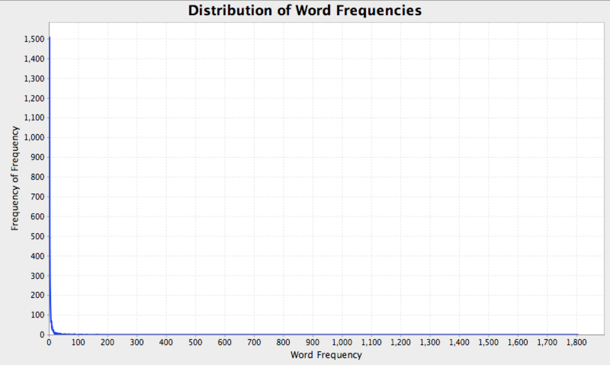

Assignment 0 - Programming in Scala
- Overview
- Part 1: Getting set up
- Part 2: Counting words
- Part 3: Removing stopwords
- Part 4: Word count distribution
- Part 5: Counting n-grams
- Part 6: Reading a data file
Due: Tuesday, September 10, noon
This course will require you to complete several non-trivial programming assignments. As such, to be successful in this class you must be comfortable programming. The primary purpose of this assignment is for you to ensure that you have at least a minimum level programming competence.
All of the programming assignments for the rest of the course will be more difficult than this one. If you find this assignment excessively difficult, then this course may not be for you.
If you have questions, or want to discuss whether you think the course is a good fit for you, please do not hesitate to talk to me.
Overview
In this assignment, you will write code for reading texts from file and calculating basic statistics about that data. This code will be used in subsequent programming assignments since all future assignments will require working with texts.
In the root of your repository, create a file called Assignment0_README.md that contains:
- A short overview of what you’ve done
- A list of files relevant to this assignment
- Any commands needed to demonstrate your programs
Send an email by noon on the due date to both me (dhg@cs.utexas.edu) and Lewis (lewfish@cs.utexas.edu) when your code is checked in, pushed, and ready for grading. The subject of your email should be:
nlpclass-fall2013 a0 completed lastname firstname
You are highly encouraged to make your code as modular as possible, to facilitate reuse. Functions like reading a file, cleaning it up, and counting things are going to be used all the time in this course. Having easy-to-call functions for these operations in your code will serve you well.
You may discuss programming assignments with your classmates. And google is an invaluable programming asset (in school and in the real world), so use it well. But avoid looking for exact answers on google or having classmates give you exact solutions. And please don’t post these assignments to StackOverflow asking people to do your work for you. The point of these programming assignments is to reinforce the material; copying and pasting from the internet defeats that purpose. The goal is to learn something, to practice programming, to develop critical thinking skills, and, hopefully, to have fun.
Part 1: Getting set up
Follow the instructions on the Assignment Requirements and Scala Environment Setup pages. At a minimum, you’ll need to:
-
Download and install Scala
-
Download and install SBT
-
Create a Github Account and register as a student
-
Create a PRIVATE GitHub repository for your code with the name
nlpclass-fall2013-lastname-firstnameand clone it to your computer
-
Add me (GitHub username
dhgarrette) and Lewis (GitHub usernamelewfish) each as a “collaborator” -
Create a Scala project in (the root of) your repository with
nlpclass-fall2013as a dependency
All of your code for this assignment will be located in a package called nlp.a0. This means that there should be a folder called a0 contained in a folder called nlp. So you should have this:
nlpclass-fall2013-lastname-firstname/src/main/scala/nlp/a0For an example of this setup, see the program Example, which is set up in a similar way (though with a different package name). It can be run as:
$ cd nlpclass-fall2013-lastname-firstname
$ sbt "run-main nlpclass.Example"
[...]
This is an example Scala program.
[...]Part 2: Counting words
Download Alice’s Adventures in Wonderland from Project Gutenberg.
Write an application that does the following:
- Takes a file path of as a command-line argument.
- Removes all punctuation and numbers and lowercases all words.
- Prints the total number of words in the book.
- Prints the number of distinct words in the book.
- Prints each of the top 10 most frequent words along with its count and its percentage of the total.
The application should be in an object called WordCount in a package called nlp.a0. I should be able to run your program with something like this, and get this exact output (excluding sbt garbage):
$ cd nlpclass-fall2013-lastname-firstname
$ sbt "run-main nlp.a0.WordCount /Users/dhg/texts/alice.txt"
Total number of words: 30419
Number of distinct words: 3007
Top 10 words:
the 1818 5.98
and 940 3.09
to 809 2.66
a 690 2.27
of 631 2.07
it 610 2.01
she 553 1.82
i 545 1.79
you 481 1.58
said 462 1.52Part 3: Removing stopwords
Stopwords are extremely frequent non-content words such as determiners, pronouns, and prepositions. You’ll notice that the top 10 words in the book are all stopwords. Because they are so frequent, stopwords don’t generally tell us much about the content of a document because they are generally the same across all documents.
Here, you will extend your program to allow for word counting that ignore stopwords. Update your program to:
- Take a file of stopwords as a command-line parameter with the option
--stopwords FILE. (For example: this one). - If the list of stopwords is present, then skip them in your top-10 display (but don’t exclude them from your total count).
- Ensure that if the stopwords option is not present, that the program will run as in Part 2.
I should be able to run your program with something like this, and get this exact output (excluding sbt garbage):
$ sbt "run-main nlp.a0.WordCount alice.txt --stopwords english.stop"
Total number of words: 30419
Number of distinct words: 3007
Top 10 words:
alice 403 1.32
gutenberg 93 0.31
project 87 0.29
queen 75 0.25
thought 74 0.24
time 71 0.23
king 63 0.21
turtle 59 0.19
began 58 0.19
tm 57 0.19This list is a bit more interesting since it shows us words that are actually relevant to the book.
Part 4: Word count distribution
The distributions of words in a document are always highly skewed: a few words appear with very high frequencies, but most words appear very few times. To get an idea of the shape of things, write a program called WordFreqFreq that prints the ten most frequent frequencies and the five least frequent frequencies.
Your output should be obviously be sorted by frequency frequency, but for frequencies with the same frequency frequency, you should sort by frequency. Confused yet?
I should be able to run your program with something like this, and get this exact output (excluding sbt garbage):
$ sbt "run-main nlp.a0.WordFreqFreq /Users/dhg/texts/alice.txt"
Top 10 most frequent frequencies:
1331 words appear 1 time
467 words appear 2 times
264 words appear 3 times
176 words appear 4 times
101 words appear 5 times
74 words appear 8 times
72 words appear 6 times
66 words appear 7 times
38 words appear 9 times
36 words appear 10 times
Bottom 5 most frequent frequencies:
1 word appears 631 times
1 word appears 690 times
1 word appears 809 times
1 word appears 940 times
1 word appears 1818 timesNote: your output needs to be grammatical.
So 44% of the words in the book appear only once (1331 out of 3007).
I plotted a graph of the frequency distribution:
{kind=link}
Part 5: Counting n-grams
An n-gram is a sequence of n words. We will be talking a lot more about n-grams later in this course, but for now we’re just going to count them.
In future exercises, I’ll be giving you a trait and asking you to implement it. To make sure that this makes sense, here is a simple example.
In the nlpclass-fall2013 jar that your project should have as a dependency, there is a trait nlpclass.NGramCountingToImplement. It looks like this:
trait NGramCountingToImplement {
/**
* Given a vector of tokens, return a mapping from ngrams
* to their counts.
*/
def countNGrams(tokens: Vector[String]): Map[Vector[String], Int]
}
Your task is to implement this trait. You should create a file that looks like this:
package nlp.a0
import nlpclass.NGramCountingToImplement
class NGramCounting(n: Int) extends NGramCountingToImplement {
def countNGrams(tokens: Vector[String]): Map[Vector[String], Int] = {
??? // Your code here
}
}
and implement the method countNGrams. Hint: See Vector.sliding in the API.
I’m going to test your class like this:
scala> sbt console
scala> val aliceText = ...
scala> val counts = new nlp.a0.NGramCounting(3).countNGrams(aliceText)
scala> counts(Vector("the", "white", "rabbit"))
res0: Int = 21
Now write a program called CountTrigrams that prints the top 10 most frequent trigrams along with their counts I should be able to run your program with something like this, and get this exact output (excluding sbt garbage):
$ sbt "run-main nlp.a0.CountTrigrams /Users/dhg/texts/alice.txt"
project gutenberg tm 57
the mock turtle 53
i don t 31
the march hare 30
the project gutenberg 29
said the king 29
the white rabbit 21
said the hatter 21
said to herself 19
said the mock 19Just for fun: of the 25,774 distinct trigrams, 23,294 (90.4%) appear only once, and more than 99.9% appear 12 times or fewer!
Part 6: Reading a data file
During this class, there are times when we will need to read data files that appear in particular formats. Thus, as a final exercise, we will write code to read one such file (that will be used in a future assignment).
The data will be in the form of files like this:
Outlook=Sunny,Temperature=Hot,Humidity=High,Wind=Weak,No
Outlook=Sunny,Temperature=Hot,Humidity=High,Wind=Strong,No
Outlook=Overcast,Temperature=Hot,Humidity=High,Wind=Weak,Yes
Outlook=Rain,Temperature=Mild,Humidity=High,Wind=Weak,Yes
Outlook=Rain,Temperature=Cool,Humidity=Normal,Wind=Weak,Yes
Outlook=Rain,Temperature=Cool,Humidity=Normal,Wind=Strong,No
Outlook=Overcast,Temperature=Cool,Humidity=Normal,Wind=Strong,Yes
Outlook=Sunny,Temperature=Mild,Humidity=High,Wind=Weak,No
Outlook=Sunny,Temperature=Cool,Humidity=Normal,Wind=Weak,Yes
Outlook=Rain,Temperature=Mild,Humidity=Normal,Wind=Weak,Yes
Outlook=Sunny,Temperature=Mild,Humidity=Normal,Wind=Strong,Yes
Outlook=Overcast,Temperature=Mild,Humidity=High,Wind=Strong,Yes
Outlook=Overcast,Temperature=Hot,Humidity=Normal,Wind=Weak,Yes
Outlook=Rain,Temperature=Mild,Humidity=High,Wind=Strong,NoEach line of the file represents a training instance for a classification task. Lines consist of a series of comma-separated fields. Each field (except the last) is in the format FEATURE=VALUE. The last field is a label for the instance.
Your job is to write a program called CountFeatures that takes a file path and prints a list, for each feature, of feature values and their counts, broken down by label, with everything sorted alphabetically. If the above data was found in a file called data1.txt, I should be able to run your program with something like this, and get this exact output (excluding sbt garbage):
$ sbt "run-main nlp.a0.CountFeatures /Users/dhg/texts/data1.txt"
No 5
Yes 9
Humidity
No
High 4
Normal 1
Yes
High 3
Normal 6
Outlook
No
Rain 2
Sunny 3
Yes
Overcast 4
Rain 3
Sunny 2
Temperature
No
Cool 1
Hot 2
Mild 2
Yes
Cool 3
Hot 2
Mild 4
Wind
No
Strong 3
Weak 2
Yes
Strong 3
Weak 6Critically, your program must be flexible enough to handle files with any features and any labels, as long as it conforms to the same format of comma-separated FEATURE=VALUE pairs follwed by a label. You can assume that no feature, value, or label will ever contain either a comma or an equals sign.
If I run it with a file data2.txt that contains:
word=loved,word=film,word=loved,word=actor,pos=loved,pos=loved,positive
word=film,word=bad,word=plot,word=worst,neg=bad,neg=worst,negative
word=worst,word=film,word=dumb,word=film,neg=worst,neg=dumb,negative
word=car,word=chase,word=fight,word=scene,word=film,neutral
word=great,word=plot,word=best,word=film,pos=great,pos=best,positive
word=best,word=actor,word=bad,word=plot,pos=best,neg=bad,negative
word=hated,word=terrible,word=film,neg=hated,neg=terrible,negativeThen I should be able to run your program with something like this, and get this exact output (excluding sbt garbage):
$ sbt "run-main nlp.a0.CountFeatures /Users/dhg/texts/data2.txt"
negative 4
neutral 1
positive 2
neg
negative
bad 2
dumb 1
hated 1
terrible 1
worst 2
pos
negative
best 1
positive
best 1
great 1
loved 2
word
negative
actor 1
bad 2
best 1
dumb 1
film 4
hated 1
plot 2
terrible 1
worst 2
neutral
car 1
chase 1
fight 1
film 1
scene 1
positive
actor 1
best 1
film 2
great 1
loved 2
plot 1